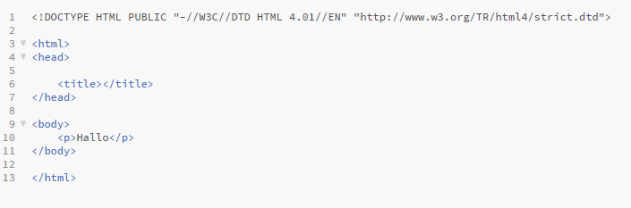
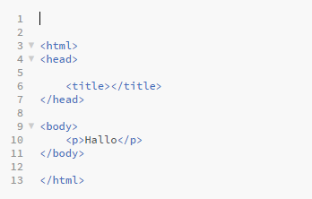
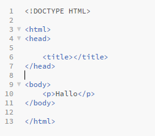

HTML
The Doctype Declaration
Created by Sabine Imanbaew / @S.I.
Agenda
Pre HTML5 vs HTML5
- Sinn und Zweck
- Aufbau
- Doctype-Switching
Sinn und Zweck
- historisch gewachsen
- Vielfalt an versch. Versionen
- jede Version verrät dem Browser wie ein HTML-Dokument darzustellen ist
Doctype-Switching
- Standards-Mode
- Quirks-Mode
- nicht standardkonforme Anzeige
Doctype-Switching
HTML-Version 4.01 für IE8

Doctype-Switching
Doctype-Declaration wird weggelassen

Doctype-Switching
Doctype Declaration nach HTML5

Taking Home Message
- Declaration <!doctype html> unbedingt machen, weil
- guter Stil und
- selbst alte, sowie neue Browser dabei in den Standards-Mode springen!